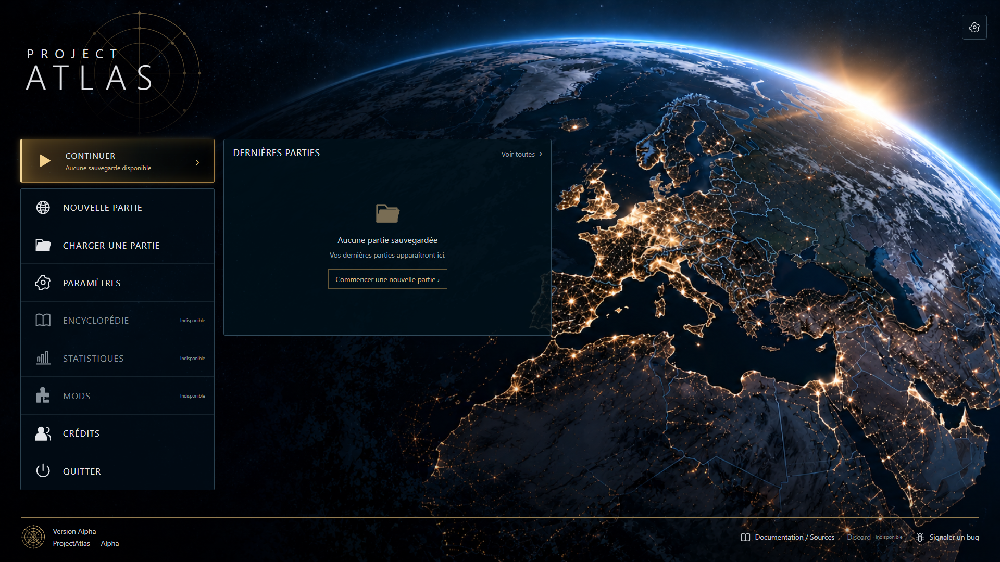
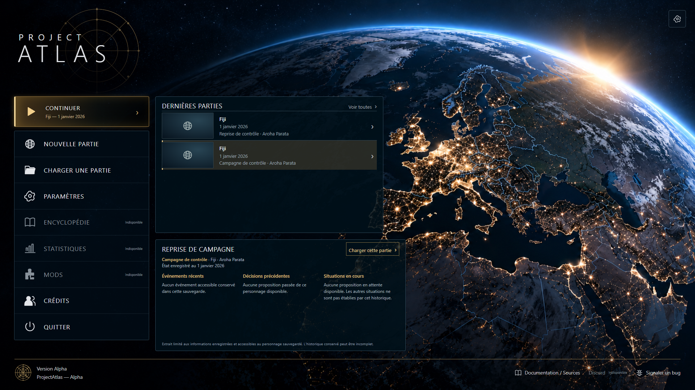
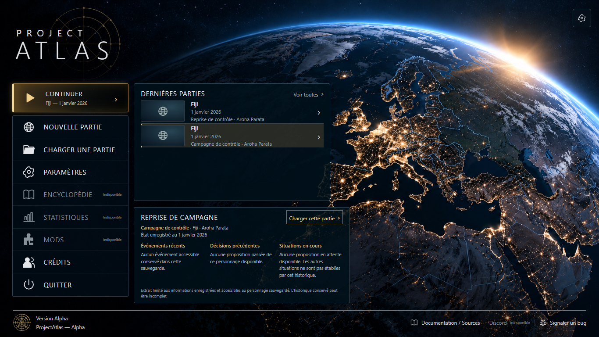
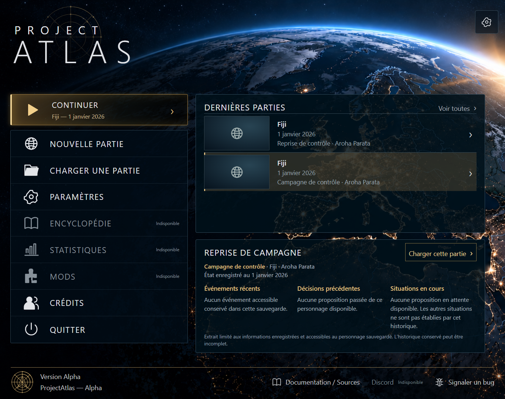
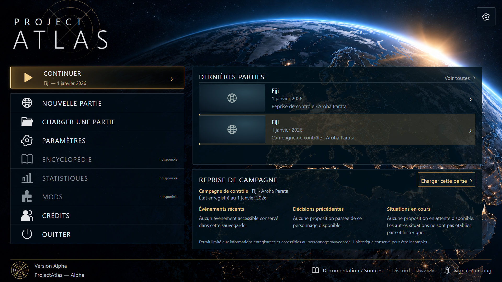

Captures réelles de l'application React. Les slots ont été créés par le jeu lors du contrôle ; aucun événement ou historique n'a été ajouté. Le stockage mémoire est limité à la session de test isolée. Le code de sauvegarde de production est inchangé.





Rapport complet et données manquantes · Résultats des contrôles navigateur